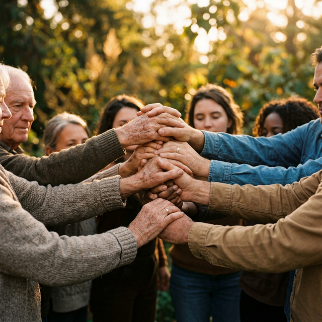

Connect with donors, NGOs, and volunteers on a single platform. Track donations, discover organizations, and make a measurable social impact — together.
A seamless platform designed to bridge the gap between those who can give and those who need, with full transparency and tracking.
Post donations of food, clothes, educational materials, and more. Track your contributions from submission to delivery.
Find verified non-profit organizations working in education, health, environment, and poverty alleviation. Connect directly with them.
Coordinate collection and distribution activities. Log your volunteer hours and track your impact across the community.
Visualize the collective social impact with real-time statistics, contribution breakdowns, and volunteer metrics.
NGOs submit resource requests that go through transparent approval workflows. Donors and volunteers can directly fulfill needs.
Secure role-based system with Admin, NGO, Donor, and Volunteer accounts — each with tailored dashboards and capabilities.

We believe every act of kindness matters. Community Connect was built to ensure that no resource goes to waste and every hand that wants to help finds the right place to do so.
By connecting donors, NGOs, volunteers, and beneficiaries on a single transparent platform, we create an ecosystem of trust and measurable social impact.
Community Connect directly aligns with key United Nations Sustainable Development Goals.
Hear from the people who are making a difference every day through Community Connect.
Community Connect made it incredibly easy for us to reach donors who truly care. We received supplies within days of posting our request.
I wanted to volunteer but didn't know where to start. This platform connected me to meaningful activities right in my neighborhood.
The transparency of the donation tracking gave me confidence that my contributions are truly making an impact where they're needed most.
Join thousands of donors, volunteers, and organizations working together for a better world. Every contribution counts.